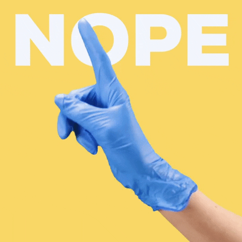

- Afirmação de que animais de estimação podem transmitir a Covid-19 aos humanos
- Somente pessoas sintomáticas transmitem a Covid-19
- Consumo de álcool protege contra a Covid-19
- Alimentos alcalinos evitam coronavírus
- Chá de limão com bicarbonato quente cura
- Vitamina C + zinco cura o novo coronavírus
- O SUS-COVID-19 é um aplicativo falso e quando instalado no celular capta todas as informações do seu aparelho
- Máscaras de doação da China são contaminadas com coronavírus
- Semelhança do vírus HIV com o coronavírus
- Óleos consagrados para curar coronavírus
- Declarações de profissionais da saúde são compartilhados textos e/ou áudios supostamente produzidos por médicos, enfermeiros, técnicos e por autoridades da área
- Termômetro infravermelho mata neurônios
- Que não é nescessario distanciamento social
- Medicamentos de aids curam coronavírus
- Existe um medicamento específico para o tratamento ou a prevenção da Covid-19 (hidroxicloroquina)

Fonte: Reciis – Revista Eletrônica de Comunicação, Informação & Inovação em Saúde, Rio de Janeiro, v. 15, n. 1, p. 55-71, jan./mar. 2021 [www.reciis.icict.fiocruz.br] e-ISSN 1981-6278